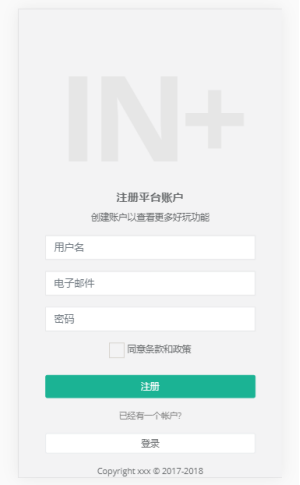

实 验 报 告
学院：计算机科学学院 专业： 计算机应用技术 2020年 12月8日
姓 名 | 学 号 | |||||
班 级 | 指导老师 | 邓燕灵 | ||||
课程名称 | 《Web前端工程师》 | 成 绩 | ||||
实验名称 | 基于Bootstrap4.5的响应式注册页面设计 | |||||
1．实验目的 (1). 学会Bootstrap的基本样式使用方法。 (2). 学会使用浏览器开发者工具分析、调试网站元素的结构、样式； (3). 掌握Bootstrap的导航栏、基础表单、下拉菜单、巨幕区块组件的使用方法； (4). 掌握Bootstrap的栅格基本布局的基本方法； (5). 学会Jquery的Ajax加载页面方法； | ||||||
2．实验内容 (1). 采用响应式框架模拟设计一个用户注册页面； (2). 注册页面头部设计为导航栏； (3). 注册页面脚部为页脚，采用巨幕区块方式利用Jquery的Ajax方式加载外部页面显示版权信息； (4). 注册页面中部为注册信息表单；表单内输入文本框、下拉菜单、按钮等组件采用Bootstrap的表单组件实现响应式布局； | ||||||
3．实验环境 (1). WIN 10操作系统 (2). VS CODE编辑器 (3). Bootstrap4.5 (4). JQuery-3.4.1 | ||||||
4．实验方法和步骤（含设计） 使用Bootstrap制作一个注册界面，根据屏幕尺寸的不同进行实时的调整所占宽度比例。 首先在head部分外联样式表，以及bootstrap的依赖文件 表单使用form-group，和form-control来编写，form-group可用于表单布局，对form中的div添加该样式进行布局，同时配合form的class进行布局： 编写底部栏 M-t Css样式表： Css - 样式表文件 Fonts - 字体文件 Images - 图片素材 Js - js脚本文件 | ||||||
5．程序及测试结果 大屏幕 小屏幕  | ||||||
6．实验分析与体会 使用了BootStrap之后，我体会到了它的优点： 1）跨设备、跨浏览器 可以兼容所有现代浏览器，包括比较诟病的IE7、IE8. 2）响应式布局 不但可以支持PC端的各种分辨率的显示，还支持移动端PAD、手机等屏幕的响应式切换显示。 3）提供全面的组件 BootStrap提供了实用性很强的组件，包括：导航、标签、工具条、按钮等一系列组件，方便开发者调用。 4）内置jQuery插件 BootStrap提供了很多实用的jQuery插件，这些插件方便开发者实现web中各种常规特效。 5）支持HTML5、CSS3 日期 ： 2020 年 12 月 8 日 | ||||||
教师评语 签名： 年 月 日 | ||||||